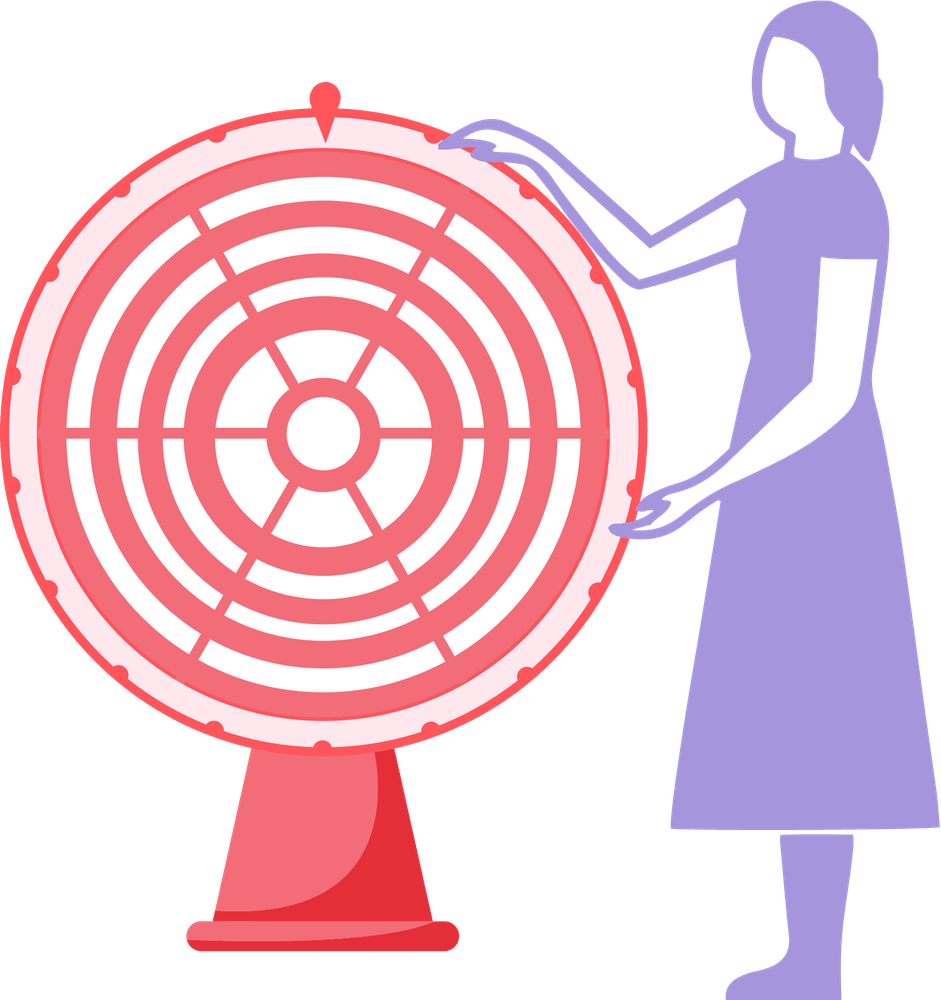

Mit der Academy erhaltet ihr im Business-Plan praxisnahe Lernmodule rund um Facilitation und wirksame Transformation.
Gemeinsam mit 9 Spaces zeigt Plan International Deutschland, wie wertebasiertes Arbeiten Orientierung gibt – nach innen wie nach außen.

Mit diesem Tool findet ihr heraus, was euch bei der Arbeit antreibt und wie ihr mehr davon in euren Arbeitsalltag integrieren könnt.
Dieses Tool hilft dir dabei, ungewünschte Verhaltensmuster zu verlernen.
Dieses Tool hilft dir herauszufinden, welche Werte dir wirklich wichtig sind.
Jede Karriere ist einzigartig – und selten verläuft sie linear. Dieses Tool hilft dir, deine bisherigen Karriere-Entscheidungen zu reflektieren und zu überlegen, welche Pfade du in Zukunft einschlagen möchtest.